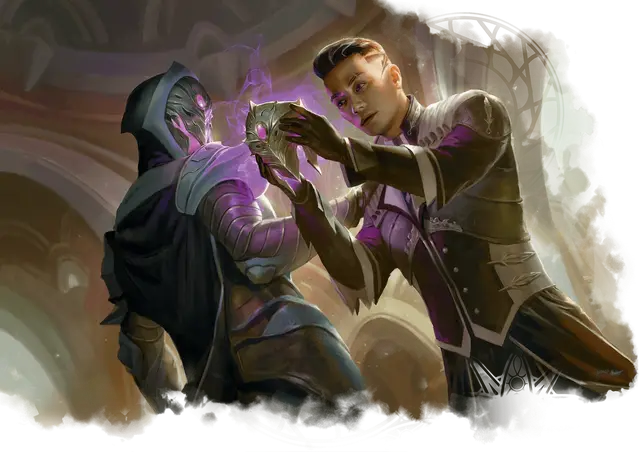

Вербовщик Орика
Oriq Recruiter
Средний Гуманоид (Колдун), законно-злой

Класс Доспеха 16 (ненаправленная защита)
Хиты 55 (10к8 + 10)
Скорость 30 футов
| мод | спас | ||
|---|---|---|---|
| СИЛ | 10 | +0 | +0 |
| ЛОВ | 14 | +2 | +2 |
| ТЕЛ | 12 | +1 | +1 |
| мод | спас | ||
|---|---|---|---|
| ИНТ | 17 | +3 | +5 |
| МДР | 15 | +2 | +4 |
| ХАР | 18 | +4 | +6 |
Навыки Магия +5, Обман +8, Проницательность +4, Убеждение +6
Сопротивление урону психическая энергия
Иммунитет к состояниям испуг, очарование
Чувства пассивное Восприятие 12
Языки Общий
Опасность 4 (1100 опыта)
Бонус мастерства +2
Особенности
Языки. Знает Общий и ещё два языка.
Ненаправленная защита. Пока вербовщик не носит ни доспехи, ни щит, к КД прибавляется его модификатор Харизмы.
Маска Орика. Вербовщик носит маску Орика. Пока вербовщик носит эту маску, он не может стать целью магии прорицания или обнаружен с помощью магических сенсоров прорицания, и он добавляет удвоенный бонус мастерства к своим проверками Харизмы (Обман) (бонус уже включён).
Действия
Мультиатака. Вербовщик совершает две атаки Психическим ножом. Он может наложить заклинание вместо одной из атак.
Психический нож. Рукопашная или дальнобойная атака заклинанием: +6 к попаданию, досягаемость 5 футов или дистанция 30 футов, одно существо. Попадание: 21 (5к6 + 4) урона психической энергией.
Использование заклинаний. Вербовщик накладывает одно из следующих заклинаний, используя Харизму в качестве базовой характеристики (Сл спасброска от заклинаний 14):
• Неограниченно: маскировка [disguise self], безмолвный образ [silent image];
• 2/день: очарование личности [charm person];
• 1/день: внушение [suggestion].
Описание
Вербовщики Орика - это хитрые маги, которые проникают в Стриксхейвен для службы своему ордену. Они умеют сливаться с толпой, высматривая могущественных, но неуспевающих магов и студентов, которые оказываются за бортом учебного заведения. Вербовщики подходят к этим людям и заводят с ними дружеские отношения либо как с потенциальными рекрутами в Орик, либо как с агентами, которые могут помочь Орику приобрести заклинания, редкие компоненты заклинаний или знания из Стриксхейвена.
Орик
Орик - это тайное общество магов, которые владеют запрещенной магией на службе у своего лидера Экстуса Нарра. Нарр рассматривался для повышения на роль Оракула Стриксхейвена, но когда Драконы-Основатели отказались от него в пользу Джадзи, его обида не знала границ. Теперь он использует Орик, чтобы собрать заклинания и магическую энергию, необходимые ему для вызова разрушительного существа, Кровавого Аватара, чтобы уничтожить Стриксхейвен.
Орик работают тайно, проникая в Стриксхейвен в поисках магии, которой жаждет их лидер, и наблюдают за впечатлительными студентами и озлобленными преподавателями, которых они могли бы привлечь на свою сторону. Орики изо всех сил стараются скрыть свою истинную преданность и носят маски, чтобы скрыть свою личность. Эти маски обладают магическими свойствами, которые действуют только на тех, кто их носит.